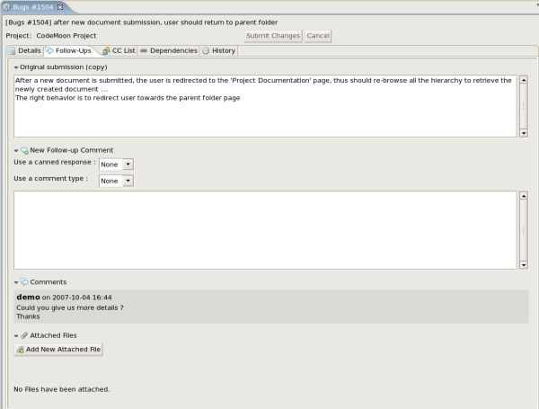
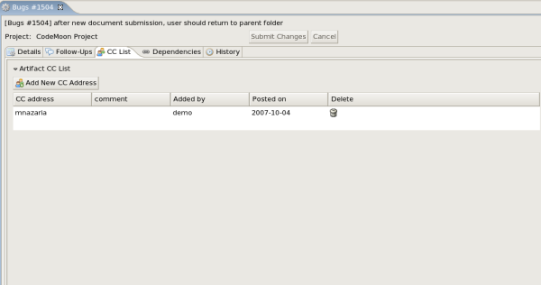
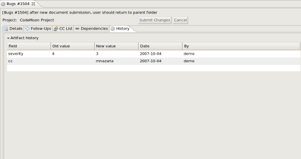

This document is licensed under the Codex Component Software License
Xerox ®, The Document Company ®, and all Xerox products mentioned in this publication are trademarks of Xerox Corporation.
This document was formatted with the DocBook XML DTD. HTML version rendered with DocBook HTML native renderer. PDF version rendered with Apache FOP.
Copyright © 2007 The Document Company - Xerox. All rights reserved.
Table of Contents
- 1. Installation
- 2. Getting Started
- 3. Servers
- 3.1. Introduction
- 3.2. Servers configuration
- 3.2.1. Add a CodeX server
- 3.2.2. Edit a CodeX server
- 3.2.3. Remove a CodeX server
- 3.3. Server usage
- 3.3.1. Connect a CodeX server
- 3.3.2. Browse a CodeX server
- 4. Artifact List
- 4.1. Introduction
- 4.2. Browse the artifact list
- 4.2.1. Artifact Filter
- 4.2.2. Artifact List
- 4.2.3. Artifact List pagination
- 5. Artifact Details
- 5.1. Introduction
- 5.2. Artifact Details Tabs
- 5.2.1. Details Tab
- 5.2.2. Follow-up Tab
- 5.2.3. CCList Tab
- 5.2.4. Dependencies Tab
- 5.2.5. History Tab
- 6. Preferences
- 6.1. Introduction
- 6.2. Servers preferences
- 6.3. Reports preferences
The CodeX Eclipse plugin is to be deployed on Eclipse 3.2 and needs JRE 1.5
The Eclipse plugin can be installed and updated with the updatesite mecanism. The CodeX plugin update site is : [YOUR_CODEX_SERVER]/downloads/eclipse
To install the CodeX plugin with Eclipse update site mecanism, please follow the instructions below:
In the Eclipse main toolbar, select Help > Software Update > Find and install...
Check Search for new features to install, then click Next
Press the New Remote Site... button
Fill the dialog box with
Name: CodeX (for instance)
URL: [YOUR_CODEX_SERVER]/downloads/eclipse
Check the CodeX box (you can expand to see the feature details), and then press OK
Eclipse will ask you to accept or not the license. If you want to accept the license, check "I accept the terms in the license agreement"
Then click the Finish button.
Eclipse will ask you to check the feature to install. Press the Install button
Eclipse will download the feature and may need to restart to complete the installation
Enjoy CodeX!
Table of Contents
This plugin let you browse your CodeX artefacts in your Eclipse environment. If you don't know what CodeX is, please visit http://codex.xrce.xerox.com.
 |
To connect your CodeX Server, open the CodeX perspective and
select the "Add a new server" icon in the CodeX view
 ,
,
then fill the server configuration form:
Name: the name that will appear in your Eclipse interface
URL: the URL of your CodeX server (e.g: http://codex.xerox.com;)
Username: your CodeX username
Password: your CodeX password (Warning: if you give your password, it will be stored in your computer. If you don't want to, leave it blank, your password will be asked you each time you want to connect the CodeX server)
apply the changes,
then click the OK button.
Your CodeX server is now stored in your Eclipse preferences. You can browse your projects and trackers (See Section 2.3).
Once the CodeX server is set and connected, it should appear in the CodeX view.
Then, you can browse the projects your member of, and for every project, browse the trackers.
 |
Table of Contents
- 3.1. Introduction
- 3.2. Servers configuration
- 3.2.1. Add a CodeX server
- 3.2.2. Edit a CodeX server
- 3.2.3. Remove a CodeX server
- 3.3. Server usage
- 3.3.1. Connect a CodeX server
- 3.3.2. Browse a CodeX server
The CodeX Eclipse Plugin allows you to work on several CodeX server in the same time. The CodeX servers and associated connexions are stored in the Eclipse preferences.
The CodeX servers are displayed in the CodeX view. If the CodeX view is not opened, you can open it by opening the CodeX perspective. To perform that, select Window > Open perspective > Others... and then select the "CodeX" perspective.
To use the CodeX plugin, the first thing to do is to configure (at least) one server.
The server configurations are stored in the Eclipse preferences.
You can view all the servers configuration by viewing the CodeX
plugin preferences (
Window >
Preferences... >
CodeX >
servers).
There is also a shortcut to access the server preferences : click
the preferences button
 in the CodeX view.
in the CodeX view.
To add a server, you can
click the "add a server" icon
in the CodeX view toolbar,right click in the CodeX view and select "add a server",
select Window -> Preferences... -> CodeX -> servers ; and click the "New..." button
All these actions lead to the same screen:
 |
To edit a server, you can
right click in the CodeX view and select "edit a server",
select Window -> Preferences... -> CodeX -> servers ; select the configuration you want to edit, and then click the "Edit..." button
All these actions lead to the same screen (the same screen as the "add server" action, but the data are filled with the current server configuration).
Once you made modifications, click the Apply button to store them. The server configuration will change and will be stored.
If the connexion to the server is not initiated, the server
has a red light on its icon
 .
To login to the server, just expand the server.
If you didn't store your password, it will be asked.
Once the server is connected, the icon should be green now
.
To login to the server, just expand the server.
If you didn't store your password, it will be asked.
Once the server is connected, the icon should be green now
 ,
and you should see your projects.
,
and you should see your projects.
When the server is connected, all the projects you're member of appear under the server.
|
You can expand each project, and you will see all the trackers of the project.
For every tracker, a double click on it will open the artifact list in another view (the "Artifact List" view, see Chapter 4). The report used is the default report. If you want to open the list with another report, just right click on the selected tracker, and select "Open artifact list with report..." and then select the report you want. You can open several trackers at the same time.
When you hover the tracker name, the number of opened artifact and the total number of artifact are displayed as a tooltip if you have the right to see it.
You also have an acces to the tracker administration. Right-click on the tracker name and select "Tracker administration". This will open the internal Eclipse browser to the administration page of the selected tracker.
Table of Contents
- 4.1. Introduction
- 4.2. Browse the artifact list
- 4.2.1. Artifact Filter
- 4.2.2. Artifact List
- 4.2.3. Artifact List pagination
The list of artifacts is displayed in the view "Artifact List". By double-clicking a tracker in the "CodeX" view, this view should open automatically. If not, you can open it by selecting Window -> Show view -> Other... -> CodeX -> Artifact List.
You can open several trackers at the same time.
 |
The artifact list view is made up of 3 parts:
the report filter that allows you to filter the result by building a query (on top of the view)
the list of artifact (there is a pagination)
the control part that give you the total number of artifact, and the buttons to browse the next result page (on bottom of the view).
To change the report:
select the view menu,
select "Choose report...",
and then select the report you want.
This will display the list with the selected report.
The filter allows you to filter the artifact with some values of fields. The fieds used in the filter are thoses defined in the CodeX tracker administration.
To run the filter, click the "Search" button. It will refresh the artifact list (the number of artifact that answer the query is displayed in the "pagination" part).
The number of artifact displayed by page can be changed too. You can modify it by entering a new number in the box "Display ** artifacts at once".
Change the pagination numberThe default value is stored in preferences page. To change the default value, select Window -> Preferences... -> CodeX -> report. Be carefull not to give a too big number: it could become very slow. |
The list of artifact is displayed with colors of severity. You can customize the colors of severity in the plugin preferences.
The sort of artifact is activated only if all the artifacts are displayed in the same page. To sort the list regarding a field, just click on the field column.
To open an artifact, double click the artifact in the list. The detail of the artifact will be displayed in a third view named "Artifact Details" (see Chapter 5 for details).
The pagination part give you information about the current page. It will give you the artifacts displayed regarding the total number of artifact. For instance: <code>items 21 - 40 / 60</code> means that you are viewing 20 artifact of the result, to the position 21 to 40 in the result list, and that there are 60 artifacts answering the query.
To see the next page (if needed), click the "next" button. The "previous" button will go back. The "Begin" and "End" buttons will display the first and the last page of results.
Table of Contents
- 5.1. Introduction
- 5.2. Artifact Details Tabs
- 5.2.1. Details Tab
- 5.2.2. Follow-up Tab
- 5.2.3. CCList Tab
- 5.2.4. Dependencies Tab
- 5.2.5. History Tab
 |
The Artifact Details view is the view to update an create artifacts. This view allows you to work with several artifact in the same time.
The artifact details is subdivided in tabs. Each section of the usual artifact interface is a tab in the eclipse interface.
To submit your changes, click the "Submit" button. In the case of a new artifact, the button to submit is "Create Artifact". To cancel your changes and retrieve the values of the artifact, click the "Cancel" button.
No change will be done unless you submit it by clicking the "Submit" button. The submit button send the changes to the CodeX server, as you could do it in your web browser.
 |
In this tab, you will find all the fields of the artifact. They are grouped in fieldset, that you can collapse and expand.
|  |
In this tab, you will find things about the follow-up comments and attached files.
The "Original submission" field is displayed in this tab (copy).
Then, you can write a new follow-up comment.
The existing follow-up comments are displayed just below.
Then comes the attached file section.
To add a new attached file, click the "Add New attached file" button,
and select your file on your local disk.
The list of existing attached files is displayed just below.
To download an attached file, double click the name of the file.
A windows will ask you where you want to save it on your local disk.
To delete an attached file, click the trash icon
 (the file won't be deleted until you submit the changes).
(the file won't be deleted until you submit the changes).
|  |
In this tab, you can see the CC List of the current artifact, and add an new one.
To add a new CC, press the "Add new CC" button, and fill the fields.
To delete an existing CC, press the trash icon
 (the CC won't be deleted until you submit the changes).
(the CC won't be deleted until you submit the changes).
 |
In this tab, you can view the dependencies between artifacts.
To create an artifact dependency, press the "Add new dependencies" button, and then type one or several artifact IDs (comma separated) and submit the form. The cross-referenced artifacts appear in the table right below the "add" button showing their description as well as the tracker and the project they belong to.
To delete an artifact dependency simply click on the
wastebasket icon
 to the right of the artifact description line (the dependency won't be deleted until you submit the changes).
to the right of the artifact description line (the dependency won't be deleted until you submit the changes).
The dependency section shows the artifact dependencies in both ways: it shows the list of artifact(s) the displayed artifact depends on but also the list of artifacts that depend upon the one you are browsing.
|  |
The last tab shows the artifact history. The artifact history keeps track of all the changes that occurred on all artifact fields since the creation of the artifact.
The artifact history shows what fields changed, what the old value was before the change took place, who changed it and when.
These data are not editable.
Table of Contents
- 6.1. Introduction
- 6.2. Servers preferences
- 6.3. Reports preferences
The preferences of the CodeX plugin are stored in the Eclipse Preferences. To reach them, select in the Eclipse main toolbar Window > Preferences... > CodeX.
 |
This section is the CodeX server management part. All the configurations are displayed in the table. For each configuration, you can edit or remove it. You can add a new configuration by pressing the "New..." button.
 |
For more details, please see Section 3.2
These preferences are about reports, which are the list of artifacts, result of a query.
You can change the default number of artifact displayed at once in the Artifact List view. Be carefull not to give a too high number, for performance reasons. The default number is 50. Pressing "Restore Defaults" will restore this value.